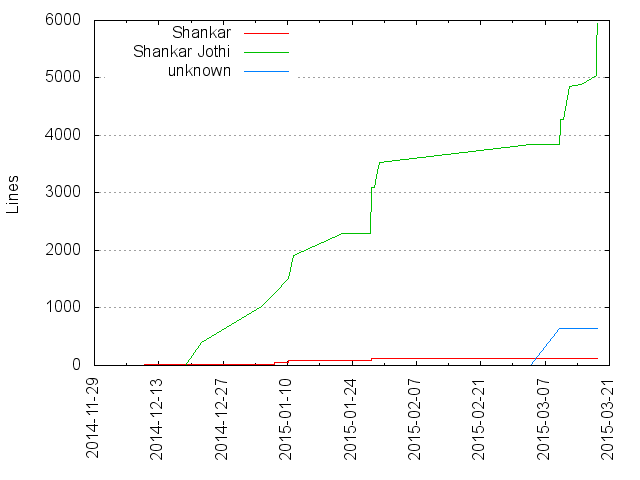
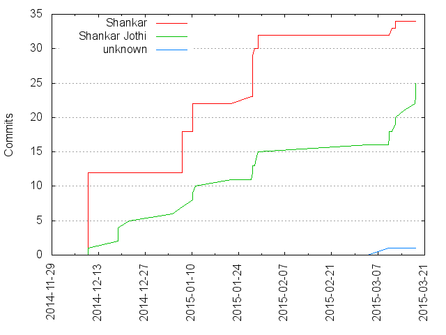

Authors
| Author | Commits (%) | + lines | - lines | First commit | Last commit | Age | Active days | # by commits |
|---|
| Shankar | 34 (56.67%) | 127 | 57 | 2014-12-09 | 2015-03-11 | 92 days, 11:00:16 | 8 | 1 |
| Shankar Jothi | 25 (41.67%) | 5940 | 3100 | 2014-12-09 | 2015-03-18 | 98 days, 13:43:24 | 16 | 2 |
| unknown | 1 (1.67%) | 636 | 262 | 2015-03-09 | 2015-03-09 | 0:00:00 | 1 | 3 |


| Month | Author | Commits (%) | Next top 5 | Number of authors |
|---|
| 2015-03 | Shankar Jothi | 10 (76.92% of 13) | Shankar, unknown | 3 |
| 2015-01 | Shankar | 20 (66.67% of 30) | Shankar Jothi | 2 |
| 2014-12 | Shankar | 12 (70.59% of 17) | Shankar Jothi | 2 |
| Year | Author | Commits (%) | Next top 5 | Number of authors |
|---|
| 2015 | Shankar | 22 (51.16% of 43) | Shankar Jothi, unknown | 3 |
| 2014 | Shankar | 12 (70.59% of 17) | Shankar Jothi | 2 |
| Domains | Total (%) |
|---|
| outlook.com | 43 (71.67%) |
|---|
| Shankars-MacBook-Pro.local | 16 (26.67%) |
|---|
| 10-196-69-166.wireless.oregonstate.edu | 1 (1.67%) |
|---|